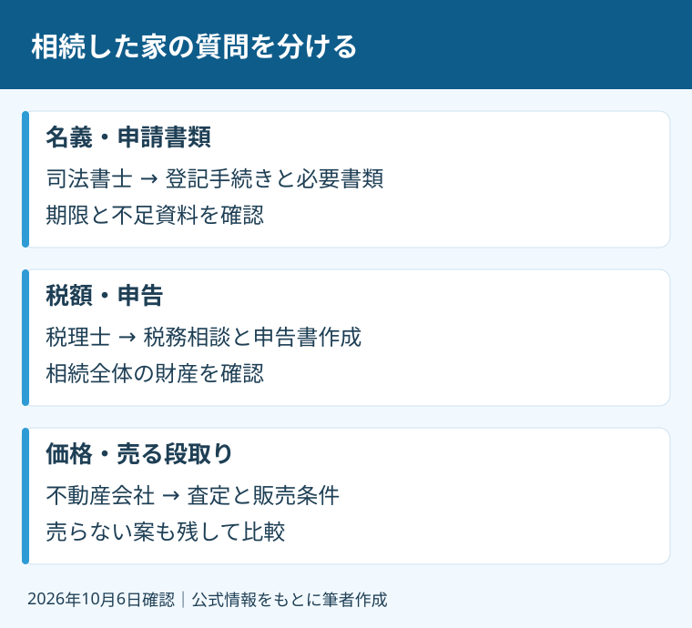

相続した実家の相談で、最初から全員の専門家を予約する必要はありません。何を決めたいのかと、いつまでに確認するのかを分けます。「家をどうしたらよいか」という一つの悩みでも、名義、税金、売却条件は別の仕事です。
私、大石浩之（磐田市／不動産業）は、宅地建物取引士として売却の条件に責任を持つ立場です。税務や登記の判断まで、私の資格で引き受けることはできません。本記事は2026年10月6日に一次情報を確認し、相談先の選び方に絞って整理しました。
登記・税金・売却で、相談の仕事は変わる
相続不動産の相談先は、解決したい質問の種類で分けます。登記手続きの代理や書類作成は司法書士、税務相談や相続税申告書の作成は税理士、査定や販売条件の相談は不動産会社を軸に考えます。資格と依頼内容を合わせるための整理です。
日本司法書士会連合会の「司法書士の業務」には、登記手続きの代理、法務局へ提出する書類の作成、それらに関する相談が挙げられています。登記とは、土地や建物の所有者などを公の記録に載せる手続きです。名義を直す仕事と買主を探す仕事は違います。
日本税理士会連合会の「税理士とは」は、税務代理、税務書類の作成、税務相談を案内しています。相続税申告書の作成も記載されています。税額を個別に判断する仕事は、家の売却価格を見積もる査定とは分けます。
私は、同じ「家の値段」という言葉でも、売れる可能性を検討する価格と、税務上の評価を混同しない方針です。不動産会社の査定書を一枚取れば、税務の答えまでそろうわけではありません。資料は共有できても、判断の担当は別です。

磐田の11月23日相談会は、事前申込みを確認
磐田市公式「空き家に関する相談会等」は、2026年11月23日10～15時に「空き家に関するワンストップ相談会」を開催予定としています。会場は総合健康福祉会館iプラザのふれあい交流室1～3です。主催は静岡県と磐田市です。
申込期限は2026年11月17日16時です。問い合わせ先は静岡県空き家対策推進協議会事務局、電話054-247-3823。市ページの受付時間は10～12時、13～16時です。申し込む前に、相談したい内容と持参資料を受付へ伝えます。予約の空き状況は本記事では未確認です。
市ページには過去の相談会も並んでいます。過去の回に記載された司法書士、税理士などの説明を、11月23日の参加者名簿として読むことはできません。希望する専門分野の担当がいるか、当日どこまで相談できるかは、申し込む時に確かめます。
私は、一つの窓口に相談内容を出せる点を良い入口だと評価します。ただし、相談会の日まで登記や税務の確認を待つ提案ではありません。個別の期限が近い場合は先に専門家へ連絡します。開催予定や申込条件も、予約時に最新案内を確認してください。
良い点は相談の入口、注文は次の担当の明示
私が考える、相談先を職域で分ける良い点は、不足する材料を誰に聞けばよいかが見えることです。家族が同じ事情を何度も説明する負担も減らせます。私の提案では、質問一覧を作り、各担当に同じ資料の控えを示します。
例えば、家を残すか売るかが未定でも、名義の確認、税の申告の確認、現状で売る場合の条件整理は並行して進められます。一つの相談の答えが出るまで、ほかの確認を全部止める必要はありません。家族の予定に合わせて、訪問や書類取得を組めます。
その上で注文したいのは、相談が終わった後の担当を曖昧にしないことです。「司法書士に聞いて」で終わらず、何の書類について、どの期限を確かめるのかを残したい。ご家族には、次に動く人と連絡日まで書いたメモが必要だと私は考えます。
私は、窓口を一つにする便利さと、資格ごとの責任を分ける説明を両立させたいのです。全部を任せられるように聞こえる言葉には迷いがあります。窓口で整理を手伝うことと、個別の申請や税務判断を引き受けることの境目を、先に示します。
相続人が海外に住む場合は、海外相続人の証明書を頼む前の3確認で、提出先・証明する事項・取得と送付の担当を整理できます。
私が売却相談で先に確認する資料
不動産会社へ相続不動産を相談する際は、所在地、土地と建物の名義、家族の希望、残る荷物の状況を整理するのが私の提案です。資料がそろわない場合は、その不足自体を伝えます。全部集めるまで問い合わせを延ばす必要はありません。
登記事項証明書や固定資産税の通知書が手元にあるなら、相談時に示す資料の候補になります。通知書の納税者だけで、現在の登記名義を決め付けません。土地と建物の名義が同じか、登記内容のどこが未確認かを、司法書士への質問として残します。
登記の期限は相続登記の期限と磐田・袋井の確認手順へつなげます。個別の期限の起算や、どの申出・申請を選ぶかは専門家に確認を。ここでは期限の一般解説を、相談先の比較に混ぜません。
相続税の相談なら、実家以外の財産や負債も専門家に確認する材料になります。家一軒の査定だけで、申告の要否を決めることはできません。相続税の10か月から段取りを逆算する記事を読み、期限に関する質問を税理士へ持参してください。
無料相談と正式な依頼は、料金も範囲も分ける
専門家へ話を聞く段階と、書類作成や申請を正式に依頼する段階は分けて確認します。相談の入口が無料でも、その後の仕事まで無料とは限りません。各窓口で、どこから費用が発生するかを聞くのが私の案内方針です。
見積りは総額だけでなく、作業の対象を見ます。戸籍などの収集、登記申請、税務申告、売却の仲介を同じ「相続手続き一式」で比べると、範囲の差が分かりません。依頼する仕事、実費、追加作業の扱いを書面で確認します。
不動産会社への相談にも、有料の課題整理などがあり得ます。不動産相談料と仲介手数料の境界で、別の作業を別契約で買う考え方を説明しています。売却を依頼しない場合に、どの費用が残るのかも相談前に聞いてください。
家族間で希望が違う場合は、査定額を出せば合意できるとは限りません。私は、売却の条件を説明する役と、権利や紛争を扱う役を分けます。誰が権利者で、どの合意が必要かという個別判断は、弁護士などの専門家に確認を。
今日の一歩は、質問を三つの欄へ分けること
相続不動産の相談を始める今日の一歩は、紙に「名義」「税金」「使い道」の三つの欄を書くことです。各欄に一つずつ質問を書き、分からない箇所を残します。相談会へ行くか、専門家へ直接問い合わせるかを選ぶ材料になります。
私はこう考えます。家族で相談先を決める場面なら、最初に「売る」と紙へ書かず、「母の家を当面どう管理するか」と書きたい。次に、名義を調べる人、税の期限を聞く人、家の状態を見に行く人を分けます。これは私の提案で、実際の相談の再現ではありません。結論を急がず、それでも期限の確認だけは置き去りにしない段取りです。
売却の支障を調べる入口は、磐田の空き家相談で査定前に確認することにもまとめています。相談先を選ぶ記事と、物件そのものの条件を確認する記事を、使い分けてください。
富士ヶ丘サービスでは、磐田市・袋井市を中心に、介護と不動産を一体で相談できる窓口を設けています。家族が困らない売却のため、私は分からない点と担当を残す形で案内します。今日売却を決めなくて構いません。税務・登記・相続の個別判断は、各専門家に確認を。